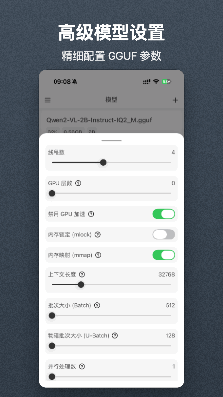
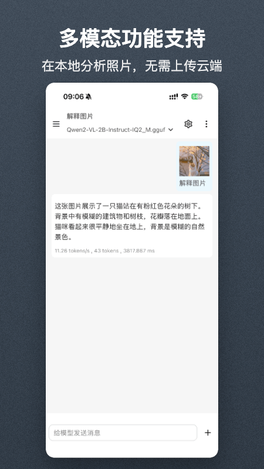

把大模型装进安卓手机——Local AI 从零上手到跑通多模态
Local AI 是一个通用 GGUF 模型运行器，不自带模型、不依赖云端。这篇教程带你从零把应用装上、选对模型、调好参数，最终在手机离线状态下跑通对话和识图。
读完这篇教程，你能在自己的安卓手机上完成一件事：不连 Wi-Fi、不插 SIM，也能用本地大模型流畅对话、识别图片里的物体和文字。
准备工作：三个门槛提前扫清
在动手之前，先确认三件事，省得做到一半卡住。
第一是硬件。Local AI 本体约 193 MB，真正吃内存的是模型文件。6 GB RAM 的手机能跑 2~3 B 参数量的量化模型（比如 Qwen2.5-3B 的 Q4_K_M 档，文件大约 1.8 GB）；8 GB 以上可以尝试 7 B 档。如果你的手机只有 4 GB，建议先跳过，等换了机器再来折腾——强行加载只会让系统频繁杀后台。
第二是平台限定。目前只有安卓，iOS 用户不用找了，还没有发布。
第三是存储空间。模型文件按需下载、不用就删，但至少预留 3~5 GB 给应用和首批模型，否则加载时会因为磁盘读写跟不上直接崩溃。
确认这三条没问题，就可以去官方下载页面拿安装包了。
第一步：装应用、选模型
Local AI官网 本体不带任何模型——它的定位是一个通用运行器，把你选中的 GGUF 文件装进手机 SoC 里跑推理。所以安装完应用之后，第一件事是去模型管理页面下载第一个模型。
打开应用，底部导航切到"模型管理"，点右上角的下载按钮。你会看到一批预配置好的开源模型：Qwen2.5 系列、DeepSeek-R1、Llama 3.2、Gemma 2 等等，每个模型都带了推荐的量化档位和参数量。
新手直接选 Qwen2.5-3B Q4_K_M 就行——30 亿参数、4 比特量化，中文对话能力在线，内存占用也比较友好。如果你的手机是 8 GB 以上，可以考虑 7 B 档，回答质量会有明显提升，但生成速度会慢一些。

下载完之后不用做任何额外操作，回到对话页面就可以开始聊了。
第二步：设置系统提示词，给模型定个基调
很多人第一次用 Local AI 就是打开对话框直接输入，聊了两句发现模型回答风格不对路——要么太啰嗦，要么太敷衍。问题出在系统提示词没设。
在对话页点右上角的设置图标，滚到"系统提示词"一栏。默认是一句英文的 "You are a helpful assistant"，把它改成你想要的角色定义。
好的系统提示词应该包含三个要素：你是谁、你要怎么回答、回答的风格要求。给你一个实用的起点：
你是一个中文技术助手，擅长解释概念和写代码。回答时先给简洁结论，再补充细节。代码示例用 fenced code block。不确定的内容明确说"不确定"，不要猜测。这条指令会贯穿整个会话，不计入上下文轮数、不占对话历史槽位——比在对话框里第一条消息写人设要稳定得多。模型切换后系统提示词不会自动清空，新模型会继承上一个模型的设置，这点要留意。
第三步：调参数，让模型跑得又快又稳
第一次对话跑通之后，别着急一直聊，先花三分钟把 GGUF 精细参数调一下——默认值比较保守，把每 GB 内存和每帧算力挤出来能让体验上一个台阶。
回到对话设置页，滚动到 GGUF 精细配置区域。你会看到一堆参数：GPU 层数、内存锁定、批次大小、并行数。这里说三个最重要的。
GPU 层数 决定了模型有多少层跑在 GPU 上——设成"尽量多"就好，Local AI 会根据你的手机 SoC 自动分配。手动指定层数容易出错，除非你对硬件非常熟。
内存锁定 打开它。这样推理时用到的内存不会被系统回收，长对话过程中模型被后台杀掉的概率会降低很多。代价是可用内存少了几百 MB，对 6 GB 以上的机器影响不大。
批次大小 默认是 512。调到大一点（比如 1024 或 2048）可以提升推理吞吐量，但如果你的手机在对话中出现了明显发热或卡顿，就往回调。小内存机器保持默认即可。

调完这三项，退出设置回对话页，模型加载会慢几秒（因为重新分配了 GPU 层），之后生成速度应该有肉眼可见的提升。
第四步：上下文轮数，别让模型"失忆"
你可能会遇到这个情况：和模型聊了七八轮之后，它突然开始重复之前说过的内容，或者答非所问。这不是模型傻了，是上下文窗口快满了。
Local AI 默认保留 12 轮对话历史。对于日常问答来说完全够用，但如果你在讨论同一个复杂话题、需要模型引用之前十几轮的内容，就得调高。
对话设置页的"上下文数量"滑块可以调到 20~30 轮。记住一条换算规则：上下文轮数 × 每轮平均 token 数 ≤ 模型的上下文长度上限。后者是 GGUF 文件架构层面的硬限制（通常 4096~32768），超了就会截断最早的部分——这和轮数滑块无关，是模型本身的能力边界。
日常用保持 12 轮就行。长篇连续写作或需要精确引用前文的任务，临时调到 20~30，写完改回来。发现模型开始"失忆"的时候，别慌，开个新会话重新来就好。
第五步：多模态识图，手机本地就能做
如果你的手机内存够（8 GB 起步），可以试试带视觉能力的模型——比如 Qwen2.5-VL 系列。装好之后，对话页面的输入框旁边会多一个相机图标，点它就可以从相册选图或直接拍照。

常见的三个用法：
查票据信息。拍一张购物小票或快递面单，让模型帮你提取商店名称、总价、日期这类关键字段。清晰印刷体识别效果不错，手写体和模糊的小票需要多试几次。
识别陌生物体。逛街时看到不认识的花、菜、工具，拍一张发给模型。手机端小模型（2~3 B 参数量）能识别常见物体，小众品类可能认错。不确定时它会老实说不知道。
读截图和界面。朋友发来 App 界面截图想知道怎么操作，或者自己电脑上有报错截图需要分析原因——把截图裁好发过去，让模型帮你解读。
这里有两个实用技巧：一是图片质量决定识别效果，光线好、对焦准、内容清晰的图片准确率大幅提升；二是裁剪后再发，原图里无关内容太多时，先在相册里把主体裁出来，模型注意力更集中、识别精度更高。
最重要的是，所有这些操作都在手机本地完成——图片不会上传到任何服务器，飞行模式下照常可用。这一点是云端 AI 识图完全做不到的。关于多模态模型的选型建议和更多 prompt 技巧，在Local AI文档里有更详细的说明。
常见卡点
模型加载到一半卡住
最常见的原因是内存不够。先关掉其他后台应用再试；如果还是不行，换一个更小参数量的模型（比如从 7 B 降到 3 B），或者把 GGUF 的量化档位从 Q8 降到 Q4。
生成速度特别慢
检查 GPU 层数是不是设成了太少或者 0。Local AI 有时候不会自动分配好 GPU 层，手动把 GPU 层数调到"尽量多"可以解决大部分情况。另外，批次大小太小也会拖慢吞吐量，适当调大。
模型答非所问、"失忆"反复出现
上下文窗口满了。手动开新会话，或者在 GGUF 精细设置里检查当前模型的上下文长度上限——有些老模型的 GGUF 文件上下文窗口很小（4096），聊个五六轮就顶满了，需要换一个新量化的版本。
还能往哪玩
跑通基础对话和识图之后，可以试试系统提示词的进阶写法——把模型角色设成"中文文案润色助手"，给它一套输出格式规则，让它帮你改文案；或者设成"代码审查助手"，把一段代码贴进去让它找 bug。这些都不需要联网、不需要换模型，改一段系统提示词就行。
另外，Local AI 的开发者社区一直在跟进新模型的 GGUF 版本，Qwen、DeepSeek、Llama 每次出新模型，一两周内就能在模型管理页看到。保持应用更新，新模型直接加载不用等应用适配。
这套本地运行器的安装指南、模型推荐和参数调优参考，分别同步到了 GitHub、Gitee 和 GitCode 上，国内网络访问时切 Gitee 或 GitCode 更快。